| 年収１億円、職業ゆとり女子。 〜ゆるく楽しく気ままに生きる私の解体書〜 | |
| ayaka | |
| Hitotsuku Publication (2018) | |
ayaka
大人になれば、誰もが希望に胸をふくらませて社会に出る。
初めての職場、初めての同僚、初めての上司、初めてのお客。
そして、理想とは異なる大人の社会を知ることになる。
慣れない書類の作成と長い会議で残業の日々。緊張しながらの接客、情け容赦のない営業ノルマ、気をつかってばかりの社内の飲み会、胃の痛くなるようなお客様からのクレームに先輩からの厳しい指摘。
誰もが、いろいろな思いをしながら経験をし、社会人として成長していく。
社会に適応し自分の食い扶持を自分で稼ぐというものは、そういったものなのだろう。
何かを手に入れるためには、何かを犠牲にしなければならないのだ。
趣味に費やす時間や恋人と過ごす時間などわずかなもの。社会人として働くということは、そんなプライベートの時間すらも犠牲を強いられる。
その他にも上司からのパワハラ、セクハラ、同僚の嫉妬や陰口。
この社会にたったひとりで生きていくためには、耐えなければならないことだらけだ。
蓄積していくストレスが体も心もむしばんでいく中で、私たちは必死に働いている。
しかし、本当にそうなのだろうか？
「毎月の給料を稼ぐため」「社会人としての地位を確立するため」には、こんな犠牲が本当に必要不可欠なのだろうか。
パワハラもセクハラも陰口も、そしてストレスすらも感じずに働き、自由気ままに生きていくことは許されないのだろうか。
いや、違う。
趣味に費やす時間や家族との安らぎの時間を大切にしながらも、満足いく仕事をする方法はきっとあるはずだ。
そんな思いや願いを持っていたからこそ、私は見つけることができた。
会社の規則や組織のしがらみ、上司の指示に縛られることなくお金を稼ぐことができる仕事。
『オプトインアフィリエイト』
これが職を転々とし、夢も目標も見つからなかった私に「自由と希望」を与えてくれた夢のようなビジネスだった。
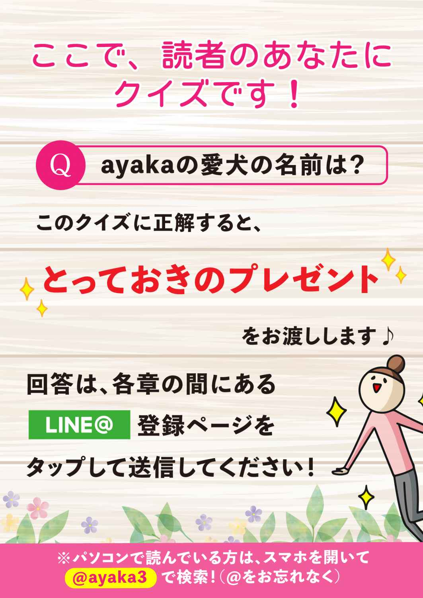
「ねえ ayaka 、次の長期休暇とったらさ、今度はどこ行こうか？」
向かい合った席に座っているユキが、そう言いながら慣れない手つきでスマホの画面をいじっていました。
ユキとは大学院時代からの付き合いで、とても気の合う友人のひとりです。こうして高級レストランで食事をするだけでなく、休みをとって一緒に海外旅行に行くこともありました。
「もう次の旅行の話なの？ 相変わらずユキは気が早いなー」
「おっ、やった！ 聞いて ayaka、インスタに投稿した今回のグアム旅行の写真、【いいね】が初めて１００件突破したよ！」
ユキがスマホの画面を見ながらガッツポーズをして、無邪気に喜んでいました。
「ユキは、インスタ映えするスポットはどこだろうって、ずっと悩んでいたもんね」
「ayaka が決めてくれた場所に間違いはなかったね！ さすがだわ。サンキュー！」
インスタがブームになってずいぶん経ちますが、ユキは最近始めたばかりでした。以前はSNSにはまったく関心なかったようですが、今ではすっかり夢中で、写真を撮りまくって毎日のように投稿しています。
「楽しかったね、グアム旅行」
私は笑顔でユキにそう伝えました。
ユキは満面の笑みをこちらに向けて、
「最高だったー！！ でも、日本に戻ってきて物凄いグアムロスになってる。完全にスランプだわ」
「会社の人たちはユキのお土産喜んでくれた？」
「そうね。でも課長には嫌味を言われた。いいねー、独身の身だと好きなところに旅行ができて、だって。今回の長期休暇をとるためにどれだけ働いたか、肝心なところを見てないのよ！ 休日返上してあいつの倍は仕事してから行ったからね」
「まさか、そんなこと言い返したの？」
「そんなわけないでしょ、そんなこと言ったら余計にパワハラがひどくなるわよ。言いたいのをグッと我慢した」
「さすが、ユキ。お疲れさま」
赤ワインをぐいっと飲み干したユキに、私はそう言って慰めました。
ご存知だと思いますが、職場の人間関係は重要です。毎日顔を合わせる相手だけに、相性が悪いと仕事の成果だけでなく、精神状態にも大きな影響を及ぼすことになります。特に直属の上司と上手くいかないと、日々蓄積されるストレスは計り知れません。
「絶対に次も長期休暇を取ってやる！ ねえayaka、次はどこに行く？ 東南アジアにも行きたいし、思い切ってヨーロッパもいいよね！」
「そうね......」
今回のグアム旅行には約20
万円かかっていました。ヨーロッパであればドイツに行きたいのですが、ユキの休暇に合せて行くとなると観光シーズン真っ盛りになります。そんな時の、ドイツのホテル費用はかなり高額です。交通費と合算して30
万円以上になることは間違いありません。
ここでの私の選択肢は２つです。
Ａ・国内旅行を提案してみる Ｂ・ドイツを提案してみる
国内旅行であればそこまで費用は高くならないでしょう。京都だって、沖縄だって、観光の名所はたくさんあり、美味しい食事ができて充分に休暇を満喫できるのです。
しかし、今の私が一番行きたい場所はドイツでした。
あなたは、どちらを選択しますか？
もちろん仕事の事情や、懐具合にもよりますよね。
このとき、私は迷わずＢのドイツを選択しました。
「そうきたかー。結構お金かかるよね？」
「ウン。でも、行きたいところに行くのが一番でしょ。仕事するときは全力で仕事する、そして、休暇のときは妥協せずに思いっきり遊ぶ。メリハリが大事。頑張るためには、頑張らないときだって必要よ。これぞ人生の醍醐味！」
「さすが ayaka 先生、勉強になるわ。ドイツか......いいねー、楽しそう！ 私、次のドイツ旅行に向けてまた仕事頑張るね。目標ができたから、きっとあいつの嫌味にも我慢できそうだし」
そう言ってユキは喜んで賛同してくれました。
『好きなときに好きなところに行く』
それが私のポリシーです。それを実現させるための時間の都合も、お金の工面もできます。
数年前までの私は違いました。仕事が忙しくて旅行に行っている時間もなく、給料が安くて海外旅行に行くための高額な費用も捻出できませんでした。
でも今は違います。だから悩む必要がありません。
私が自由に海外旅行に行ける理由、それは私が『オプトインアフィリエイト』をして成功しているからです。
『オプトインアフィリエイト』って何だ？ っていう方もいらっしゃいますよね。『オプトインアフィリエイト』についての詳細は後述しますので、もうしばらく私のプライベートの話にお付き合いください。
申し遅れましたが、私の名前は ayaka です。千葉県在住で、２０１８年の１月で31
歳になりました。こう見えて『年収１億円を稼いでいる経営者』です。
友人のユキは最近インスタを始めたばかりでしたが、私はかなり以前からフェイスブックやブログ、ツイッターやインスタなどの、ＳＮＳのツールをフル活用しています。
ですから私の日々の習慣といったら、お気に入りのカフェでスマホやパソコンを使って、ＳＮＳやＬＩＮＥなどを操作することですね。これは趣味ではなく大切な仕事です。
けっこうマメに更新もしているんです。興味のある方は、ぜひ私のフェイスブックやブログを見てみてください。
私がこれまで旅した海外の風景も掲載していますよ。お気に入りはグアム、スペイン、ドイツですね。ちなみにグアムにはもう４回以上旅行に行っています。
「ayaka。もう８時よ、何時まで寝てるの？」
１階から母の呼ぶ声が聞こえてきました。
（え？ もうそんな時間なんだ。いつもだったら起きてる時間なんだけど......お腹も痛いし、なんか体調がすぐれないな）
「ayaka どうしたの？」
いつの間にか母が２階の私の部屋に来て、心配そうに私の顔をのぞいています。
「なんだか疲れているみたいね。昨晩も遅かったんでしょ？ あんまり無理しない方がいいわよ」
昨晩は打ち合わせで帰宅が深夜でした。帰りのタクシーの中でＳＮＳ関係はすべてチェックし、更新もしていたので、自宅に着いたら寝るだけだったのですが......どうやら体は正直なようです。ここのところ気が付かないうちにハードワークになっていたようでした。
「熱はないみたいだけど......大丈夫？」
母が優しく問いかけてきました。
ここでの私の選択肢は２つです。
Ａ・無理してでも起きて仕事に出かける Ｂ・今日は安静をとって仕事を休む
あなたはどちらを選択しますか？
普通の会社員であれば、多少熱があろうが、お腹が痛かろうが、我慢して出社するでしょう。そうしなければ、周りのメンバーに迷惑をかけることになるからです。
自分がしなければならない仕事を他の人に負担してもらうことになります。ただでさえ自分の抱えている仕事量で大変なはずですから、通常でしたら他の人の仕事まで手が回りません。昼食時間や休憩時間も犠牲にして働いてもらうことになるでしょう。
つまり選択肢があるようで、ないのです。体調が悪くても出社するのが社会人の責任であり、それが組織の中で働くということです。
以前の私もそうした考え方でした。休むことなどありえない話です。仕事し続けることが当たり前だと思っていました。38
度の高熱が出てもマスクをし、１時間30
分の通勤時間をかけて都内にある会社に出社したことがあります。そのときは余計に悪化して風邪は長引きました。
休みたくても休むことは許されない。これが社会人の常識だといえるのではないでしょうか。
でも、ここで私が選択したのは、Ｂの今日は仕事を休むというものでした。
私は組織や時間に縛られない仕事ができているからです。休みたいときに休み、働きたいときに働く。それを可能にするのが『オプトインアフィリエイト』なのです。
私が気ままに休んだとしても、誰かに迷惑をかけることはありません。
今日できなかった仕事は、自分が明日頑張ればいいのです。
組織の歯車のひとつであれば、とても許されないことかもしれません。
しかし、それでも私はこう考えます。
『気がすすまない。体調が悪い。そんな日は無理せずに休むべきです。よく寝て、よく食べて、お風呂に浸かりリフレッシュする。パワーチャージですね。そうすれば明日は元気に仕事ができます。もっとも残念なのはそれができず、悪いコンディションが続くことです』
休むことも大事な業務のひとつなのです。元気に明るく仕事ができることで、成果は必ずアップします。
問題は職場の人員体制がそれを実現できるものなのか、その理解が会社や上司にあるのかではないでしょうか。残念ながら多くの会社が、個人のそのような自由を許していません。
「お母さん、ありがとう。今日は休んで寝てるね」
私は気兼ねすることなくそう母に伝えました。
好きなときに海外旅行に行き、好きなときに仕事をするライフスタイルですが、そんな私を束縛しようとする相手もいます。
その相手は、とても甘えたがり屋さんで、起きている時間帯だけでなく、ベットの中で寝ている間も私にベッタリです。
１日に何度キスされることか......。
もうやめて、と懇願しても執拗に舐めまわしてきます。
これって、やっぱり幸せな悩みでしょうか？
なんて、ちょっと紛らわしいお話の仕方になってしまいましたが、誤解しないでくださいね、相手は我が家の愛犬の『マロン』くんです。
黒に茶色が混じった配色のミニチュアダックスですね。オスで、現在の年齢は16
歳です。
かなり高齢なのですが、散歩が大好きでいつも元気いっぱいです。どんなに遅い帰宅時間になっても、必ず玄関で私の帰りを待っていてくれます。
マロンくんが歓迎の出迎えをしてくれるおかげで、その日の仕事の疲れやストレスなんて、あっという間に吹き飛んでいくので不思議です。
ペットという感覚ではないですね。マロンくんは、我が家の大事な家族の一員です。
出会いは私が高校３年生の頃でした。子犬が産まれたということで、母が知人から譲り受けてきたのです。最初は甘噛みが癖になってしまい大変でしたが、母と一緒になって毎日しつけをして、おりこうさんに成長してくれました。
私が受験勉強していると隣で寝ていて時々寝言を言ったりするんです。可愛すぎます。手足の肉球も、家に来た当時は触られることを嫌がっていましたが、慣れて信頼感が芽生えてくると安心して触らせてくれるようになりました。
垂れた大きな耳も、私や母を見かけると超高速で振る尻尾もどちら大好きなのですが、一番は大きく深い瞳です。まるで神秘に満ちた深海のようです。他の誰よりも間違いなくイケメンです。何時間見ていても飽きないですね。
眠るときも一緒ですよ。母のベットで寝るときもあれば、私のベットで私の腕枕でスヤスヤと眠るときもあります。まさに至福の幸せを感じる瞬間ですね。
マロンくんの服選びも楽しみのひとつです。家の中では服は着ず、リードもせずに放置状態ですが、散歩となると話は別です。お気に入りの散歩コースを可愛い服を着ながら、ロングリードではしゃぎまわるマロンくんの姿を見ているとこっちも元気になります。
さて、それではここで２つの選択肢です。
マロンくんが散歩に行きたいと要求してきました。夏場であれば熱中症になる恐れもあるので、昼間に散歩に行くことなどありませんが、今は冬です。今朝は関東では珍しく低温注意報が出ているほどで、朝は散歩に行けていません。いつもとは時間帯が異なるものの、昼間の時間になると外もやや暖かくなっています。
でも今日は月曜日。土曜や日曜であれば、昼間に散歩していても不思議には思われないでしょうが、平日の日中に若い独身女性が散歩していると目立ちます。
「無職なのかしら？」とか「夜の商売の女性なのかな」とか、「お付き合いしている男性もいないのかしら？ 寂しそう......」とか、すれ違う人たちはいろいろな憶測をすることでしょう。
Ａ・周りの目など気にせず散歩に行く Ｂ・時間帯をずらして夜まで我慢してもらう
あなたなら、どちらを選びますか？
以前の私なら、周りの目を気にして、有給であったとしても平日の昼間には、散歩はなるべくしませんでした。
会社でも常に上司の顔色を気にしていましたし、同僚と自分をいつも比較していました。そして知らず知らずのうちにどんどんストレスをため込んでいたのです。
今の私の選択は、迷わずＡの周りの目など気にせず散歩に行くことを選択します。
他人の目を気にしたり、他人と自分を比較していたら必要以上の劣等感を感じて、どんどんネガティブになります。他人は他人です。自分は自分なのです。
私は『オプトインアフィリエイト』に出会い、周りの目を気にせずに生きることがどれだけストレスフリーで、自由を満喫できるのかを知ることができました。
誰にどう思われようが、遠慮する必要などないのです。かけがいのない家族との時間を大事にすること、時には家族との時間を優先させる選択肢があること、『オプトインアフィリエイト』のビジネスにはそんな自由があります。
これから先のマロンくんと過ごす穏やかな時間も、ドキドキ感いっぱいの海外旅行同様に、私にとって楽しみのひとつですね。
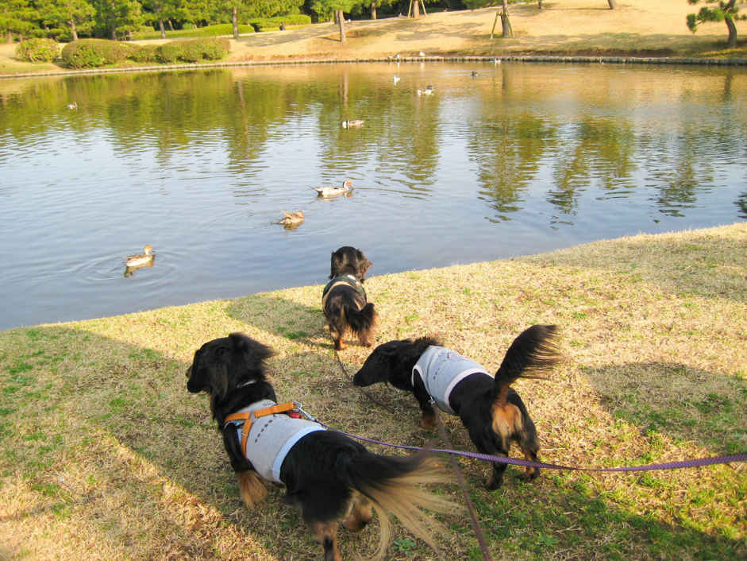
（写真：マロンと妹犬と母犬）
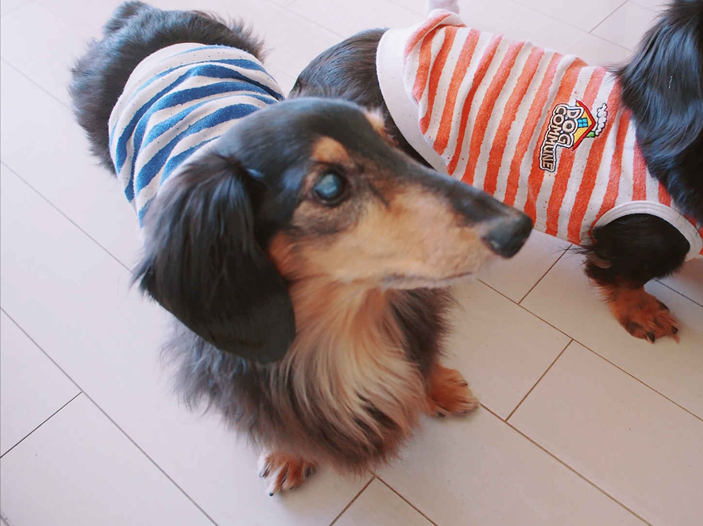
（写真：ごはんを待つマロン）
今でこそ私は起業し、様々な方のご協力のもと経営者として何とかやってこられていますが、子供時代、特別優秀だったわけではありません。ガリ勉だったわけでもありませんし、その頃から社長になりたいと思っていたわけではありません。ごく普通の女の子でした。
ただ、今振り返ってみると、私は小さな頃から『好奇心』だけは人一倍旺盛でしたね。興味を持ったことにはチャレンジしていくような子供だったことは確かです。
「ayaka ちゃん。今日はスイミングスクールの日だね」
「ウン。一緒に行こうね」
小学生の頃は仲の良い友達とそんな会話が多かったです。好奇心は旺盛なのですが、習い事を始めるのは友達と一緒ということが多かったですね。
一緒に習い事に行くのもとても楽しみだったからです。ひとりでいるのは苦手でした。遊ぶときも、習い事に通うときも、いつも５人くらいでワイワイしていましたね。
小学生の頃は、水泳の他にバドミントン、テニスもやっていました。運動はけっこう得意な方なんです。その他にピアノに書道に手芸、さらに勉強も好きでしたので学習塾にも通っていました。かなりの過密スケジュールです。
学校自体も好きだったんです。すごく真面目な生徒だったと思います。小・中・高校生と無遅刻で無欠席だったというのが私の自慢のひとつです。
中学生になってもその意欲は変わりませんでした。
テニスと学習塾を継続しながら、学校のバトミントン部に所属することになります。１週間のスケジュールは部活と習い事でパンパンです。ゆっくりする時間も友達と遊ぶ時間もありません。
私の主張を聞いて、両親は少し無理があるんじゃないかとあきれ顔でした。練習量も勉強の難度も小学生の頃とは変わってくるからです。
ここで私の選択肢は２つです。
Ａ・やりたいことは思った通りにすべてチャレンジする Ｂ・両親に相談してから検討する
もちろん習い事の費用を払ってくれるのは親ですので、両親の許可がなければ始めることはできません。父親は普通の会社員でしたが、私が一人娘ということもあってか、やりたいというリクエストにはすべて応えてくれました。
ですから、私は迷わずＡのやりたいことはすべてチャレンジすることを選びました。
「お母さん、私、もっと理数系に強くなりたいから１つ上の選抜のコースで、塾に通い続けるね」
「本当にそんな大変な中で、習い事や部活と勉強を両立できるの？」
「やってみたいの！ いいでしょ。お願い！」
「わかったけど、お父さんにも自分からお願いするのよ」
「ありがとう、お母さん！ やるからには頑張るね！」
こうして『やりたいと思ったことは、自分で決めて実現する』っていうのがこの頃から習慣になっていったんだと思います。
ただ、極めたのか？ って、聞かれると少し困りますね。どうだったんでしょう。この後のお話をお楽しみにしてください。
でもいろいろな経験を積んだことや、何より『どんどん挑戦していく姿勢が身についたこと』が、今となっては大きかったと感じています。
友達と一緒でなくても、ひとりで踏み込んでいく勇気を持つことができるようになりました。
何事もやってみないとわからないことはたくさんあります。
新しいチャレンジが、新しい成功に繋がる可能性があるのです。
チャレンジすることで、失敗するというリスクや挫折を味わうこともありますが、動かなければいつまでも状態は変わりません。失敗を恐れていたら成功することもないのです。
私が、『オプトインアフィリエイト』に出会うことができ、そこから成功することができたのも、子供の頃に培ったチャレンジ精神のおかげだったのではないでしょうか。
そう考えると、私の自主性を尊重してくれた両親に感謝ですね。しかも両親は常に私の頑張りを承認してくれ、褒めて伸ばしてくれました。
これは私が子供だった頃の話ですが、『自分や、自分の境遇を変えることは、大人になってからでも遅くはない』と思います。変わりたいという気持ちがあるのであれば、ちょっとした勇気を持って行動すれば変えられます。
私でよければ、いつでもそんなあなたのサポートをさせていただきますよ。
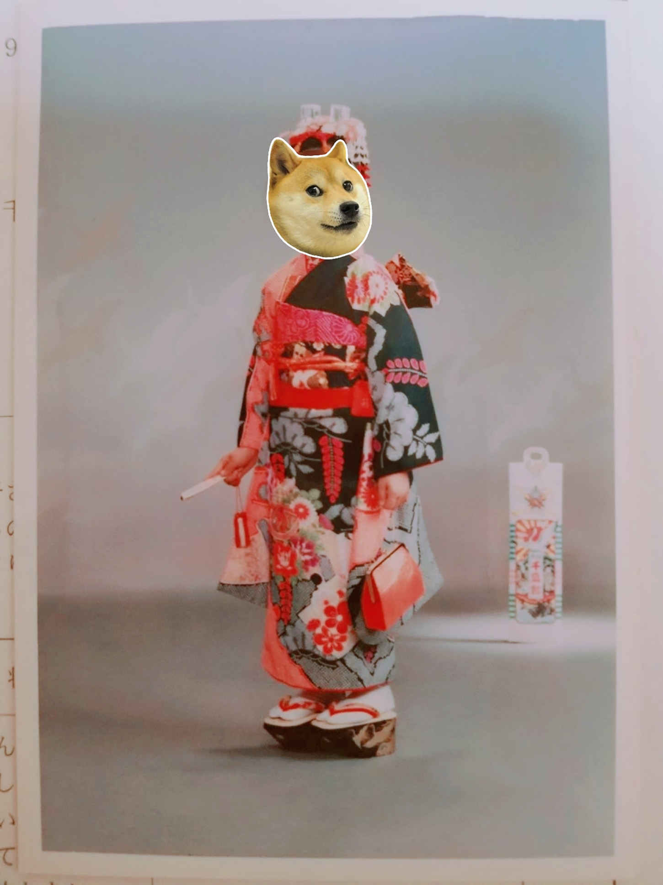
（写真：七五三）
「ayaka ってさ、将来の目標とかあるの？」
「確かに興味あるー。ayaka って何か深いこと考えてそうだよねー」
高校生時代に友達たちにそんな質問をされて、私は答えに戸惑いました。将来の目標について真剣に考えたことがなかったからです。
これが、将来について考え始めたきっかけでした。
「ayaka 最近、ちょっとメイク変わったよね。ファンデーション変えたの？」
「え？ 中心部分だけで、あとはうっすらとぼかしただけだけど......」
「んん？ 目元も怪しいぞ」
「ちょっとだけコンシーラー使ってるかな。ほら、私って目元のクマが酷いから」
「何々？ 男の影を感じるなー」
「そういうんじゃなくて、ちょっと化粧品に興味出てきただけだよ」
「ほお、誰のために綺麗になりたいのかな？」
こんな感じで、高校では授業後は毎日のようにワイワイと女子会で盛り上がっていました。特別な進学校というわけでもなく、普通の公立高校です。私は自由な校風に惹かれてこの学校を選択したのです。
部活は小・中学生の頃とは異なり、落ち着いた文化系の茶道部に入部しました。活動は週１回です。年に一度だけ文化祭での発表があるくらいで、そこまで活発な活動はありません。おしゃべりをして友達と楽しむためにここを選んだような感じです。
小・中学校の頃以上に勉強も難しくなっていたので、勉強をしっかり両立できる時間を確保したかったという理由がありました。
この時点でももちろん、起業し経営者になりたいとは夢にも思っていません。将来はどこかの会社員かな、と漠然と考えていました。
ただ、高校の卒業が近づくにつれて、やりたい仕事は少しだけ明確になってきていました。このとき、私の持ち前の好奇心を刺激していたのが、化粧品です。
女性たちに自信を与えることのできる化粧品の影響力に関心を持ったのです。
自分自身がメイクをすること以上に、私も化粧品の開発をしてみたいと強く思うようになりました。そしてどうすれば化粧品関係の研究や開発に携われるのか、という情報を入手していくことになります。
そこで、大学の進学先は薬学部を希望するようになったのです。薬学部で学ぶ製剤技術が、化粧品の開発にも有効であることを知ったからです。
そして、そのために予備校にも通うようになりました。本格的に勉強にも力を入れ始めたのです。
ちょうど薬学部が４年制から６年制に移行する直前でした。合格できずに一浪することになると、完全に６年制に入学することになってしまうのです。社会に出られる時期が大幅に遅れることになります。
ですから、薬学部を目指している人たちは、ここで合格しようとみんな必死でしたね。
ただでさえ薬学部は難関です。合格を掴むには大変なタイミングだったのです。
受験シーズンが到来し、たくさんの大学の入試試験を受けましたが、私はどこの大学の薬学部にも合格できませんでした。そしてすっかり自信を失うことになるのです。
次もきっとダメだろう......。この時期の私は完全に負け癖がついてしまっていました。
ここで私の選択肢は２つありました。
Ａ・何浪してでも薬学部に合格するまで受験を続ける Ｂ・他の合格できそうな学部を探す
あなたは、どちらを選択しますか？
化粧品の開発にこだわらず、開発者や研究者としての道を進むのであれば、薬学部以外にも選択肢があります。人を喜ばし、幸福にすることのできる研究は、何も化粧品関係ばかりではありません。
それに、新しい経験や出会いが、新しい発見となり、自分の可能性を引き出してくれるかもしれないのです。
私は生命科学にも興味があり、研究や開発についての勉強であれば理学部もありかなと考えるようになりました。つまり、私はＢの他の学部へ進学することを選択したのです。
両親もやはり私の意思を尊重して応援してくれました。両親のサポートは心強かったですね。おかげで、前向きな気持ちでまた受験に向き合うことができたのでした。
そして、ついに私は北里大学の理学部に合格することができたのです。学科は物理学科です。私はブームにもなった理系女子、いわゆる「リケジョ」の一員となったわけです。
しかし、そこには私がまったく自信のない物理という難関が待ち受けていました。受験に向けて化学は勉強してきましたが、物理はまったく勉強してきていなかったのです。
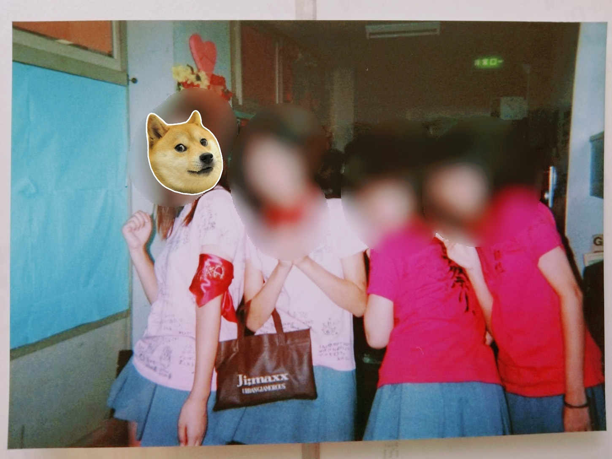
（写真：高校生の学祭！ みんなの寄書きかいたＴシャツを着て）
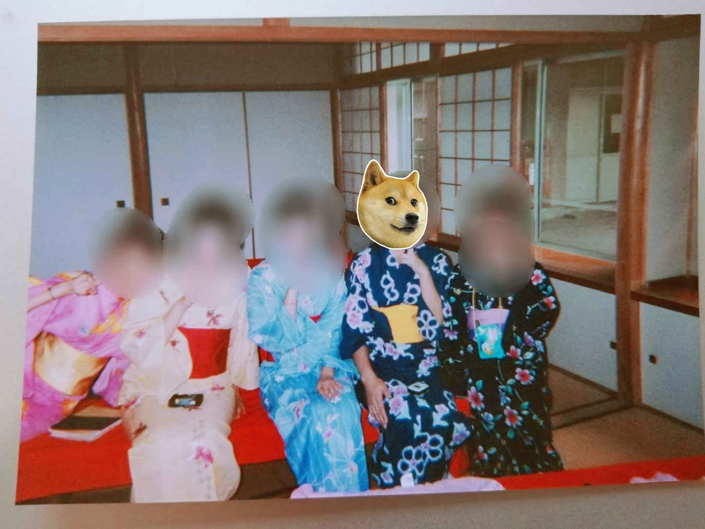
（写真：高校生の学祭！ 茶道部のみんなと）
「ayaka 今日の講義どうだった？ 時折、唸ってたけど大丈夫？」
「う、うん。まあ、大丈夫といえば、大丈夫かな......」
友達の手前そう答えてみたものの、実際のところ、物理の講義内容はほとんど理解できていませんでした。同級生にも私と同じような境遇の人が数名おり、みんな初心者用の物理のテキストで勉強しています。私はその中でもさらに最下位に位置していたのです。
哀しいかな、まさにビリギャルですね。
周囲ができていることにまったくついていけないというのは、想像以上に苦しい精神状態でした。毎日必死になって、初心者用のテキストで物理の勉強をしていましたね。
でもこれだけだと、勉強漬けの大学生時代になってしまいます。私は大学生になったら社会を知りたいという気持ちも強く持っていました。生来の好奇心旺盛さが首をもたげてきたわけです。
こうして、生まれて初めてアルバイトに挑戦することになります。
接客することも初めてでしたし、自分の力でお金を稼ぐことも初めてでした。
生命科学や物理の勉強も新しい経験として糧になりましたが、学業とアルバイトの両立は私の日々を充実させてくれました。新鮮でドキドキの毎日です。
まずは、アクセサリーを扱うブランドショップで店員として働きました。対象はセレブな大人の方々やＯＬさんなどです。高額な商品を扱うので緊張しました。
この商品のどこが優れているのか、どんなアクセサリーが人気で、どんなアクセサリーがお似合いなのか、お客様のニーズに合わせて提案していきます。
他にも、個別指導の学習塾講師にチャレンジしました。対象は小学生、中学生、高校生です。
こちらはショップと違い、商品を紹介するわけではありません。自分自身が商品であり、提供するサービスの大部分を占めていました。子供たちの成績をあげるためには、私の指導力がポイントになります。課せられた責任は重大です。
「ayaka 先生！ 私、彼氏と別々なクラスになっちゃった！ どうしよう」
そう言って泣きそうな顔をして教室に入ってきたのは、小学６年生の女の子です。
信頼してくれているからこそ、子供たちは自分たちの話を打ち明けてくれます。ここまでのひたむきな指導が実を結び、成績が伸びたことで、私は認めてもらえたのだと思います。勉強だけでなく、女性としてのアドバイスも求められるようになったのです。
（うーん、私だって彼氏なしで勉強とバイトを頑張っているというのに、最近の子はオマセさんだなー。お姉さんはちょっと心が痛いよ）
と、思っても笑顔で話を聞いてあげます。そして気持ちを切り替えさせて、勉強に向かわせるのも大事な役目のひとつでした。
私自身が、大学で物理に頭を痛めていることもあり、わからない子の立場で指導できました。自分ができるから、この子もできるだろう、そういった先入観がなかったのが良かったのでしょう。理解が遅くても、その子のペースをしっかり尊重してフォローしていく、それが他人に何かを教えるときに重要だということを実感できました。
子供たちの頑張りを見ていて私自身も励みになり、物理への苦手意識も何とか克服。そして普通に卒業できるところまで成長することができました。
ここで私には２つの選択肢がありました。
Ａ・大学院へ進むという道 Ｂ・就職して社会に出るという道
あなたは、どちらを選びますか？
大学の同級生の８割が大学院へ進んでいきました。より研究に専念したり、開発者としての知識を学ぶには大学院へ進むべきです。
２００９年ですから、社会はちょうどリーマンショックの強烈なダメージを受けた直後でした。日本全体が不景気の中でもがいている状態です。アルバイトをしていたので、ある程度、社会に吹いているそんな逆風を感じてもいました。
しかし私はここで、Ｂの就職の道を選んだのです。
１日も早く社会人になりたいという気持ちが強くありました。アルバイトではなく、もっと責任があり、重要な仕事ができる正社員として働きたかったのです。
研究者としてではなく、会社員として働いてみたい。そう考えるようになっていました。
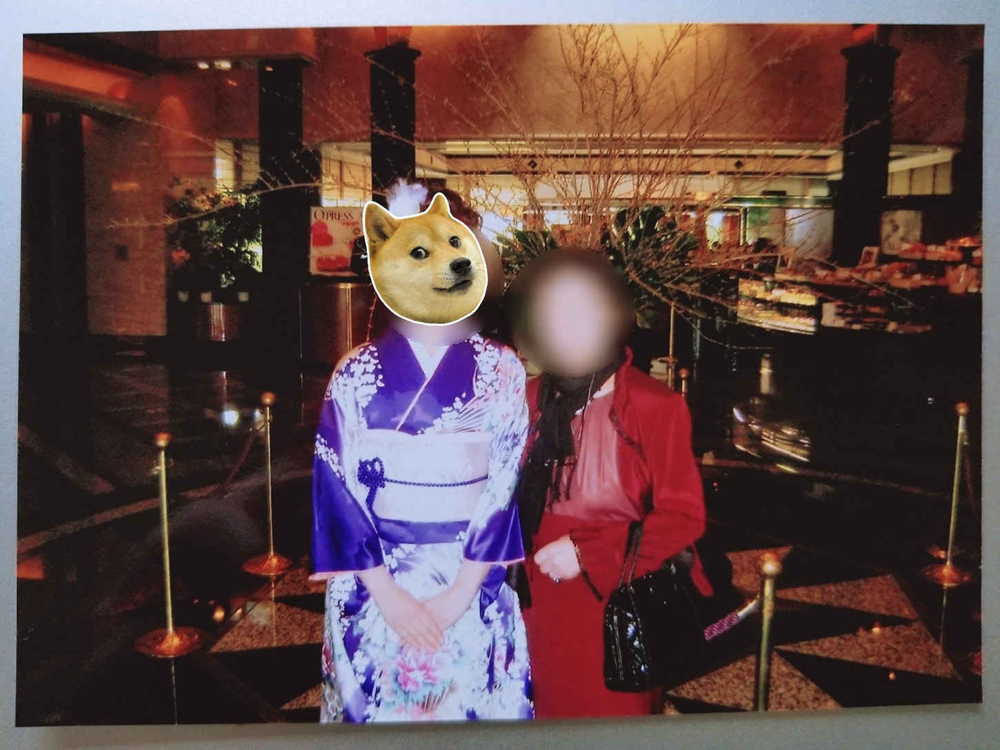
（写真：２回目の振袖は母の振袖で）
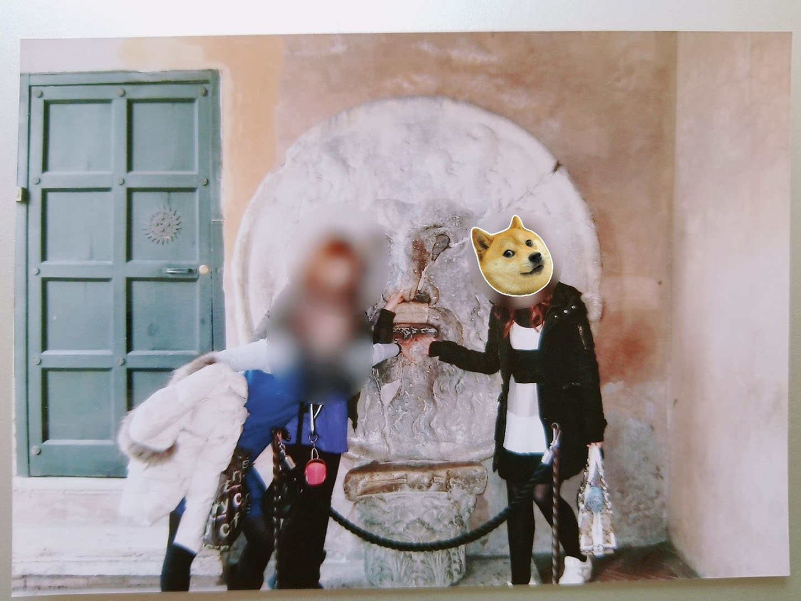
（写真：大学の卒業旅行でイタリアへ）
私は無事に大学を卒業することができ、電気機器メーカーのシャープに入社することになりました。私自身が、テレビは亀山工場製の AQUOS を愛用していましたし、シャープの製品が好きだったというのが一番の理由です。
シャープはその後、経営に行き詰まり、大型リストラや東証一部から降格するなどの危機を迎えることになりますが、台湾の鴻海グループと業務提携し、２０１７年には再度一部上場して復帰をはたしています。
２００９年当時、シャープに入社した同期の数は７００人ほどでした。堺工場が稼働を開始した年でもあり、再起をかけてかなり力が入っていたように思えます。とにかく両親は東証一部の大企業に就職できたことを喜んでくれていました。
１年目はすべてのことが初めての出来事ばかりで、嵐のように過ぎ去っていきましたね。販売・営業部門でしたから、大学生の頃の販売員経験を活かすことができましたが、やはりアルバイトと正社員では任せられる仕事の量が圧倒的に違います。求められる仕事の質も異なりました。
２年目からは東京から大阪へ異動となり、私は理系出身のリケジョということもあってＩＴ部門で働くことになります。
「ayaka 今日は残業ある？」
「ない。今日はもう帰るよー。かれこれ４日間は連続残業になってるし」
「じゃあ、街にくり出して、美味しいもの食べいこうよ！」
「そうだね。二次会はカラオケ行こう！ 思いっきりストレス発散だ」
初めての大阪の暮らしは新鮮でしたが、独り暮らしで過酷な労働を続けていくのは大変でした。そんな中で同期との食事や飲み会は大事な息抜きの時間だったのです。
「ねえ、ayaka は昼間に課長の面談だったんでしょ。何を話したの？」
焼肉を頬張り、ビールをがぶ飲みする同期の女の子が私にそう問いかけました。
「大阪での業務にはもう慣れたか？ とかかな」
「え？ それだけ？ だって結構な時間、話をしてなかった？」
「仕事面のダメ出しが多かった。ここはこうした方がいいとか、こういう気持ちが大事だとか」
「うわー、でたー。課長のダメ出しタイム。あれってすっごく面倒くさいよね。ほら、ayaka って美人さんだから、課長に口説かれてるのかなって心配してたんだよね」
「いや、そんなことありえないから。ただ......」
「え！？ 何かされたの？」
「違う、違う、そうじゃなくて。課長にどうなりたいの？ って聞かれた」
「どうなりたい？ 将来ってこと？」
「ウン。こんな仕事がしたいとか、こんな役職に就きたいとか、これぐらい稼げるようになりたいとか」
「はあ。なるほどねー。私は結婚するまでできるだけ貯金して、結婚したら、ハイ、サヨウナラーだな。ayaka は何か目標とかあるの？」
「目標とかあまり考えたことがなかったから......。そう言われて、後から職場の周囲の人たちを見渡したりしてみたんだけど、この人のようになりたいっていうのは特になかった。そしたら、あれ？ 私は本当は何がしたいんだろうって悩み始めちゃって」
「ayaka って真面目だもんね。イイ男見つけて結婚しちゃえばいいじゃん」
「うーん。それも何か違う気がするんだよね」
その日から少しずつ将来のことや、自分が何をしたいのかを考えるようになりました。大企業でのＩＴ部門の仕事もやりがいはあるのですが、私は自分の中に、理学部系の道を進みたいという気持ちがあることに気が付きました。
ここで私には２つの選択肢があります。
Ａ・このままシャープで働き続ける Ｂ・思い切って退職し、大学院へ進学する
両親に相談はしませんでした。子供の頃からそうでしたから。後悔しないように、自分の道は自分で決めてきました。今回もそうです。
そして、私はＢの退職、そして大学院への進学を決断するのです。
こうして最初の働き先であるシャープを、およそ３年間で退職することになります。そして他の仕事を探しながら予備校に通い、大学院への受験にチャレンジするのです。
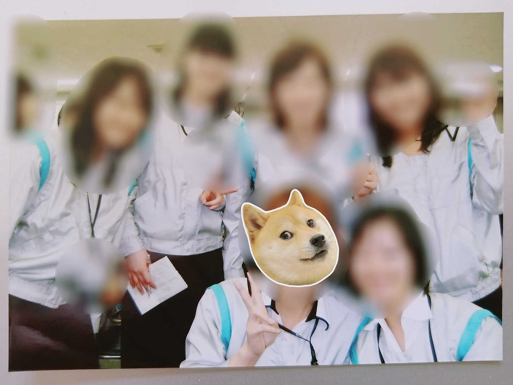
（写真：シャープ新入社員時代に同期と）
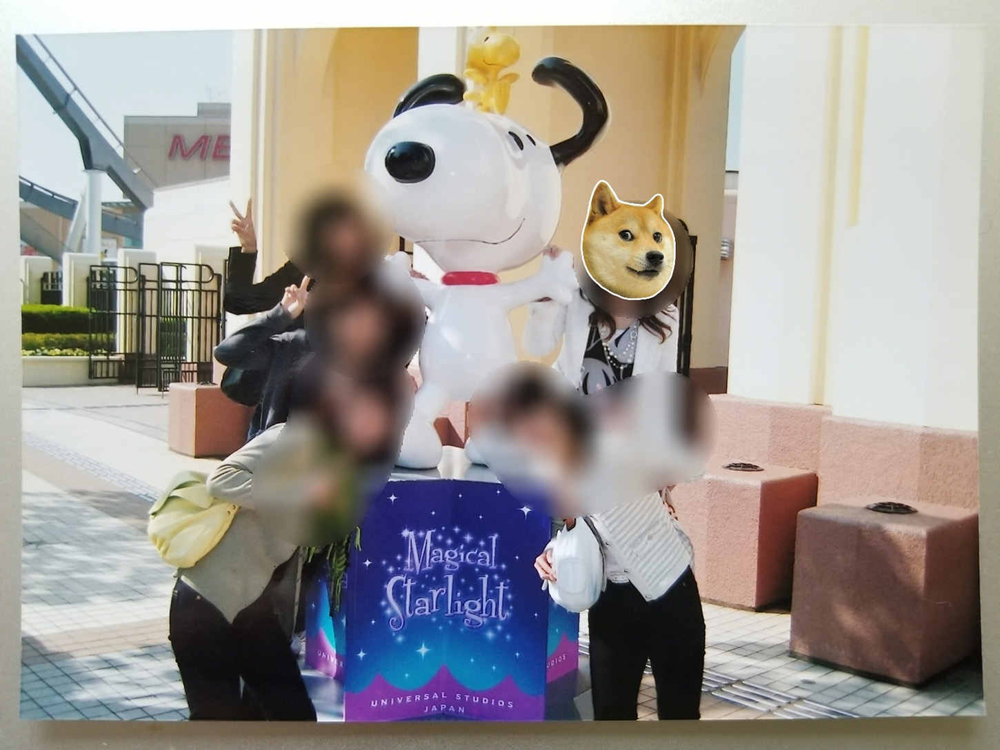
（写真：大阪にいた頃に同期でＵＳＪへ）
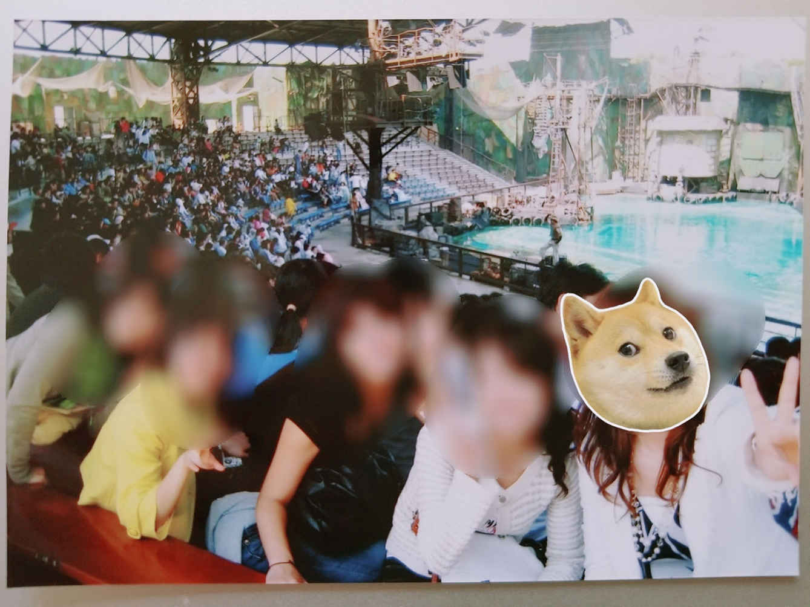
（写真：大阪にいた頃に同期でＵＳＪへ その２）
シャープを退職した後、私は次に特許事務所で働くこととなります。こちらで実地体験をしつつ、東京理科大学大学院のＭＩＰで弁理士を目指して勉強していくわけです。
しかし、社会人として働きながら、学業を両立させることは想像以上に困難なことでした。産業財産権や知的財産権に関する手続きを代行する弁理士になるためには、特許庁が実施する難関試験に合格しなければなりません。
働きながら、合格を目指して勉強するという過酷な毎日が始まります。遊ぶ時間も飲みに行く時間もありません。働き、勉強し、寝る。とにかくこの繰り返しです。
これまでの人生の中で、ここまで睡眠時間が短かった時期はありませんでした。おそらく浪人生よりもシビアでストイックな生活だったのではないでしょうか。
投げ出したくなる時期もありました。モチベーションの維持がとても難しかったからです。働いている事務所でも、実際の弁理士の働きぶりや収入面などを間近に見て、心が揺らぎました。
（私はこんな辛い思いをしてまで、本当に弁理士になりたいのだろうか......）
そんな葛藤の中、私は勉強を続け、試験に挑みました。
合格率がもっとも低いとされているのが、一次試験の基礎的知識を問う短問式試験なのですが、私はこちらを一発で合格できました。二次試験は特許法などから出題される論文式試験です。さらに三次試験はそれを発表する口述試験となっていました。
仕事と試験に向けた勉強の両立はより困難なものとなり、私のモチベーションは途中で崩壊してしまいます。二次試験の途中で挫折することとなるのです。
働いていた特許事務所も退職し、私はいよいよ目標を見失う状態に陥りました。
その後、不動産会社に就職し、管理部門でデスクワークをしましたが、面白さもやりがいも感じられずすぐに退職します。
そして、法律事務所の事務の仕事に就くのです。
転職を繰り返し、その都度、私はキャリアダウンしていきます。30
歳手前にして、予想もしていなかった苦境に立たされ、私はどんどん焦っていきました。
以前勤めていた会社の同期の昇進や、大学・大学院の友人たちの夢のかなった就職先やその喜びの声を聞いて、私は独り取り残されている心境となり、どんどん気持ちが滅入っていきました。
（こんなはずではなかった）
（私の好奇心を満たしてくれるような、もっと充実した人生を送れるはずだった）
そんな思いで悩みもがくようになります。
「ayaka はここまでよく頑張ったよ。俺と一緒になって、幸せな家庭を築く方向にシフトチェンジしてもいい頃なんじゃないか？」
当時お付き合いをしていた男性からこんなプロポーズを受け、私は婚約することにしました。
結婚して家庭に入る。それもいいかもしれないと思っていたのです。自分のこれからの人生を自分独りで切り拓いていく自信を失っていたからかもしれません。
そんなある日、私はパソコンを操作していて、ネットビジネスというものに出会いました。
当初は怪しげな雰囲気しか感じず、ただ興味本位でのぞいてみただけなのですが、調べていくうちに魅力的で将来性のあるビジネスだということに気づき始めていきます。
私は法律事務所の事務職を続けながら、空いた時間でネットビジネスに挑戦していくことにしたのです。
ネットビジネスと一言でいっても様々な種類があります。その中でも、私が強く惹かれたのが『オプトインアフィリエイト』ビジネスでした。
詳しくは後述しますが、私はこの『オプトインアフィリエイト』ビジネスに大きな手ごたえを感じました。実際に、副業としては考えらえないほどの収入が入ってくるようになったのです。
（このビジネスは必ず成功する！）
そんな確信が私の中に芽生えていきます。
ここで私には２つの選択肢がありました。
Ａ・『オプトインアフィリエイト』のビジネスに専念する Ｂ・結婚し家庭に入る
あなたは、どちらを選びますか？
私も悩みました。かなり長い間悩んでいたと思います。おかげで婚約期間は１年以上も経過していました。
結果として私はＡのビジネスに専念する、を選択したのです。そして付き合っていた男性とはお別れすることになります。婚約を破棄したのです。
私は再び、自分の足で前進することになります。
副業として始めたネットビジネスですが、私は半年で勤めていた法律事務所を退職することを決意しました。
会社に縛られない自由なライフスタイルを確立するためです。それを可能にしてくれるほどの収入がありました。私は１年あまりで「アフィリエイターランキング」で１位となります。『オプトインアフィリエイト』での稼ぎが「年収５，０００万円」に達するまでになったのです。
アフィリエイトとは、インターネット上に作成した自分のホームページやブログに広告を貼り付け、そこから他の人が商品を購入すると、売り上げの一部が自分の収入となるシステムになっています。
人を惹きつけるブログの作成がとても重要になります。いくらたくさんの広告を打ち出しても、誰も見てくれないのでは売り上げはゼロのままです。まずはたくさんの人たちに見てもらうことが先決です。
そして、魅力的な商品をいち早くお知らせしていくことがポイントです。常にアンテナを張り巡らせ、情報への感度を高めておかなければなりません。
様々なアフィリエイトの手法がありますが、私がもっとも魅力を感じたのが『オプトインアフィリエイト』でした。成約率がとても高いからです。
『オプトインアフィリエイト』は他のアフィリエイトとは異なり、商品を購入しなくても収入を得ることが可能です。ブログで紹介したキャンペーンやメルマガにアドレスを登録してもらうだけで報酬が入るのです。
単価も年々上昇傾向にあり、以前は１件登録してもらうごとに３００円ほどでしたが、現在は１，０００円を突破するような案件も増えてきています。私は始めた月から20
万円を超える報酬をいただくことができました。
収入はどんどん増えていきましたが、それに比例して忙しくなるようなことはなく、驚くほどに自由な時間を確保できました。
『オプトインアフィリエイト』ビジネスのコツについては、私のメルマガやＬＩＮＥ＠
に登録していただけたら、詳しくお伝えいたします。とにかく、１日わずかな時間があれば『オプトインアフィリエイト』はできるのです。
会社に縛られていないため時間の余裕ができただけでなく、人間関係に悩まされることもなくなりました。今まで以上の収入があり、さらに時間もあるのです。しかもストレスフリーな生活を送ることができます。まさに夢のような状況を作ることができました。
私は『オプトインアフィリエイト』に出会ったおかげで、好きな海外旅行にいつでも行けるようになりました。休みの調整もいらないのです。同僚や上司に気を遣う必要もありません。
しかもパソコンやスマホさえあれば、旅行先でも『オプトインアフィリエイト』をすることができます。旅行にかかった費用を旅先で稼ぐということもできるのです。
私の生活は一変しました。
さらに、成功したことで、私のメンタル面も大きく変化していきます。これまでは知人の成功を聞いて焦りばかりを感じていましたが、素直に祝福できる心境になったのです。
ここで私には２つの選択肢ができます。
当初は副業でしたので、顔を伏せて『オプトインアフィリエイト』をしていましたが、法律事務所を退職したことで隠す必要がなくなりました。ブログやメルマガに自分の顔を公開した方が信用度は増すはずです。
もしかすると、私の顔を気に入ってくれてメルマガに登録してくれる男性も、たくさん出現するかもしれません。
もちろん、このまま顔を伏せてビジネスを続けていくことも可能です。
Ａ・顔を公開していく Ｂ・顔は引き続き伏せる
あなたは、どちらを選択しますか？
私は、Ｂの顔を伏せて続けていくことを選択しました。顔に自信がないわけではないですよ。私は、顔を伏せてもこれだけの成果を出せることを、常に証明していきたいと思ったのです。
そうすることで、「あなたの境遇でもこういったビジネスに参加できる」ということを伝え、こっそりと副業せざるを得ない方々にも、成功するチャンスがあることを知っていただきたいと考えました。
ですから、年収が１億円を突破した今でも、私は顔を公開していません。
これまで勤めていた法律事務所を退職し、長く塩漬けの状態にあった婚約を破棄し、私は完全にフリーな状態でネットビジネスに特化していきました。
「ブログやメルマガで有益な情報を誰よりも早く伝えていく」
そのコンセプトを粘り強く継続していくにつれて、私のＳＮＳの輪は広がっていきました。信頼の輪とも呼べるかもしれません。『オプトインアフィリエイト』に興味を持ってくれる方たちも増えていき、私のブログやメルマガの登録者数も増加していきました。
そして興味を持つだけでなく、自ら実践したいという読者も現れ始めます。
「オプトインアフィリエイトビジネスについてもっとくわしく教えてほしい」
「ayaka さんのように自由な人生を満喫できる生活がしたい。どうすればいいのか教えてほしい」
「今の仕事と両立させて、副業でオプトインアフィリエイトをやってみたい。どうすれば可能でしょうか」
そのような声が寄せられることが多くなりました。
私も問い合わせや質問に対して、メールやＬＩＮＥで返信をしていたものの、数が増すにつれて、より効率的で効果的な手段の必要性を感じるようになっていきます。
そして、さらなる賛同者が現れるのです。
「ayaka さんからオプトインアフィリエイトについて、多くのことを学ぶことができました。ありがとうございました！ ぜひ私も ayaka さんのビジネスに参加させてください！ 一緒に働きたいです！」
自分独りでビジネスをしていた私と、志を共にしてくれる方々が登場するようになりました。
ここで、私は、これまでのご縁を大切にし、さらにこの輪を広げていくべく、「起業する」ことを決意しました。この時点で以前働いていた会社の年収額が、月収額に達しており、自信を持って薦められるビジネスだという確信が私にはありました。
そして「株式会社 NEXT LEVEL SOLUTION」を起業し、その代表取締役となったのです。ついこの前まで事務所の事務員だった私が、会社の経営者になるとは夢にも思いませんでした。『オプトインアフィリエイト』での出会いが、私に成功への道筋を示してくれたのです。
振り返ってみると、目標もなく、ただ言われるがまま働いていた時期もありました。
低収入で、労働時間も長く、人間関係に疲弊していく職場でも、我慢して必死に働いていた時期もありました。
疑問と不満だらけの中でしたが、それを乗り越えて働くことは社会人として当然のことなのだと、絶えず自分に言い聞かせていたと思います。
しかし、そうではなかったのです。そんな犠牲が必ずしも必要ではありませんでした。『オプトインアフィリエイト』ビジネスで成功を掴んだ今、私はそれを強く感じます。
もっと人生を楽しむことはできるのです。
もっと自由に、好きな事に時間を割き、今以上に収入を得ることは可能です。
私は、そんなライフスタイルを仲間たちに提供できる会社にしたいのです。その気持ちは、今も全くぶれることはありません。
私と一緒にビジネスをしている方々には、私と同じように成功を掴んでほしいのです。そのための「マインドセット」、「ノウハウ」、「成功に繋げるためのコツ」をたくさん伝えていかなければなりません。
ここで私には２つの選択肢がありました。
Ａ・私が講師となってすべてコンサルティングを行っていくこと Ｂ・コンサルティングができる講師を育て、情報を共有できるコミュニティを作り上げること
あなたは、どちらを選択しますか？
どちらも可能な選択肢でしたが、受け身でいては、いつまでも自由で独立したライフスタイルは構築できません。
私には、一緒に働く仲間には、「自分で考え」、「自分で行動する」ことや、「積極的に輪を広げていく」ことを期待したいという気持ちがありました。クライアントにプランニングできるコンサルタントをたくさん育成し、さらに成功の輪を広げていきたい。それが私の希望でした。
ですから、Ｂのコミュニティを作り上げることを選択したのです。
私は『オプトインアフィリエイト』をビジネスにしていきたい方々と共に、コミュニティを作りました。それが『オプトインアフィリエイト・ゆとりコミュニティ』です。
「時間」「お金」「心」の「ゆとり」を手に入れてもらうためのコミュニティですから、このような名前に決めました。
『オプトインアフィリエイト』自体は初期費用をまったくかけずに始めることのできるビジネスで、ノーリスクなのですが、だからといって誰でも簡単に成功できるわけではありません。
成功するためには必要なことがあります。
ゆとりコミュニティには、成功するための「ノウハウ」や「マインドセット」についてしっかり伝えることのできる講師が「11
人」在籍しています。
常にコミュニティメンバーのサポートができるように、３６５日24
時間体制で講師がスタンバイしているのです。ゆとりコミュニティ専用のグループＬＩＮＥがありますので、そちらでいつでも質問などを受けられるようにしました。
『オプトインアフィリエイト』はＳＮＳを活用していくビジネスですが、文章を書く力などは必要ありません。ポイントになるのはリストの量です。高額の収入を得るためには、相応のリストの量が必要になります。
ゆとりコミュニティの中で「オンライン講義」もありますから、リスト収集のコツをお伝えしています。また、『オプトインアフィリエイト』の最新案件で有力なものを、コミュニティメンバーで共有できるようにしており、情報に敏感になることができます。
プロが作成した広告をコピーペーストして貼り付けるだけの作業ではありますが、それを自身のＬＩＮＥ＠
に登録してくれた方々に配信していかなければなりません。かといって、広告だけを配信していては、商売色が強すぎて簡単にＬＩＮＥ＠
の登録を解除されてしまいます。それ以外の大事なメッセージや楽しかった出来事、ニュースなどを織り交ぜていく必要があるのです。
配信内容を楽しい雰囲気や学べる場にしていくことで、多くの人たちが興味を持ってくれます。楽しいところに人は集まるからです。
しかし、すべての作業をひとつひとつ手作業でこなしていたのでは、時間がどんどんかかっていきます。金銭面で余裕ができても、忙しすぎてとてもゆとりのある生活など送れません。ですから、ゆとりコミュニティのメンバーにはできる限り作業をスリムにするため、様々な自動化のスキルをお伝えしています。
リストが増え、収入が増えた分だけ忙しくなる。そんなことはありません。むしろ時間がかかるのはスタートだけです。軌道に乗れば、逆にどんどん自由な時間が増えていきます。ゆとりがどんどん生まれてくるのです。
『オプトインアフィリエイト』や『ゆとりコミュニティ』について詳しく知りたい方は、私 ayaka のＬＩＮＥ＠
に登録していただき、そちらから質問していただければ私が直接お答えいたします。
大切なことは、「変化を恐れず、チャンスだと思ったら行動を起こすことです」。行動することで成功が生まれます。
積極的になることで、これまで当たり前だと思っていた「苦しみ」や「我慢」、「犠牲」から解放され、生きがいに満ちた人生を歩むことができます。
誰にでもそのチャンスはあるのです。
ここに私の選択肢はありません。
あなたが選ぶ番です
誕生して間もないコミュニティですから、まだまだ改善の余地はありますが、共通した理念を持ち、重要な情報やスキルを共有できる場として、自信を持ってお薦めできるものです。
コミュニティに参加していただいた方には、全員に私のような成功体験を味わっていただきたい。私のように会社に縛られず、自分の人生を楽しんでほしい。そう願って、あなたのご参加をお待ちしております。
さて、それでは私 ayaka の誕生秘話はここまでにさせていただきます。
こうして私は、年収１億円の経営者となりました。
今回ご紹介したエピソードの何かひとつでも、あなたの今後のヒントになってくれれば幸いです。
私の人生にはたくさんの選択肢があり、その都度、私は自分の信じた道を歩んできました。今となってはどの決断も後悔はしていません。多くの失敗や挫折もしてきましたが、すべてが良い経験となって今の私の成功を作り上げてくれています。
自分の好奇心旺盛な性格は長所だと自負していますし、自分の価値観を尊重するように育ててくれた両親に感謝しています。
自分から発信していく仕事は楽しいですよ。
私は、『オプトインアフィリエイト』に限らず、そのほかのネットビジネスのコンサルティングなどもしていますので、成功をつかみ取りたいという意欲がある方は私のＬＩＮＥ@に登録していただき、どんどん質問してきてください。仮想通貨に興味があるのでしたら、そちらのご相談にもお答えすることができます。
現在の仕事や職場で「生きがい」や「夢」「目標」「楽しみ」が見つからないのであれば、私のコミュニティに参加していただき、まずは副業として始めてみませんか？
会社に頼らなくても、自立した人生を歩んでいる実感を持つことができます。
これから先、『オプトインアフィリエイト』をはじめ、ネットビジネスのマーケットはますます大きくなっていくでしょう。チャンスは目の前に広がっています。ぜひその成功をたくさんの仲間たちと分かち合いたいというのが、今の私の願いです。
「自由と希望」を、私のようにつかみ取ってください。
そのために必要なことは、『新しい世界に興味を持つこと』と『まずは実行すること』になります。
ここまでの私のお話にお付き合いいただいて、ありがとうございました。
今後の皆さんに幸多きことを祈っております。
タップしても登録できない方は、「＠ ａｙａｋａ３」でＩＤ検索して友達追加してください。（初めの＠ をお忘れなく）
タイトル 年収１億円、職業ゆとり女子。 〜ゆるく楽しく気ままに生きる私の解体書〜
発行日 ２０１８年２月28
日
著 者 ayaka
本書の全部あるいは一部をコピー、スキャン、デジタル化する無断複製は、著作権法上での例外である私的利用を除き禁じられています。本書を代行業者等の第三者に依頼してコピー、スキャンやデジタル化することは、たとえ個人や家庭内での利用であっても一切認められていません。
©２０１８ ayaka